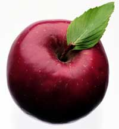

Ahhh, autumn! The crunch of crisp leaves underfoot; a sip ofspiced cider; the heady aroma of fall leaves burning, pumpkin piesbaking, cinnamon, allspice and nutmeg.
Here are a couple of recipes to bring the scent of fall intoyour home:
BAKED APPLE CUPLETS
Coating/Filling:
Batter:
Combine the one-quarter cup sugar with the one-half teaspooncinnamon. Peel and core the apples, and then roll in the mixture.Place in custard cups coated with nonstick spray. Fill the applecavities with any remaining sugar/cinnamon mixture and set aside.To make the batter, stir together the sugar, flour, baking powderand salt. Lightly beat the egg, mix with the melted butter andvanilla, and then add to the dry ingredients. Stir well. The batterwill be thick. Put 2 tablespoons of the batter over each apple. Setthe custard cups in a baking dish and bake in a 375-degree oven for40 to 45 minutes, until the apples are tender. Serves 6.
APPLE CIDER MULLS
You can use these cider mulls for a festive and aromatic drink.When packaged in a pretty bag, they make a delightful gift.
Cut the orange in half and scoop out the pulp. Place a crumpledball of aluminum foil in each orange half to help maintain theirshape. Place them on a baking sheet and dry in a 200-degree ovenfor 4 to 5 hours, leaving the door slightly open. Remove the foiland allow the orange halves to dry in the oven for 15 minutesmore.
In a small bowl, combine the brown sugar, allspice and nutmeg.Mix well. Pack half of the mixture into each orange section.Decorate the tops with a whole cinnamon stick and cloves, pushingthem down into the brown sugar mixture. To serve: put one mull into3 cups of cider and simmer over low heat for 20 minutes. Serve hot.To give as a gift, wrap each half in plastic wrap and attachdirections.
Makes two mulls, or enough for about 6 (1-cup) servings.
|
 |
|
|